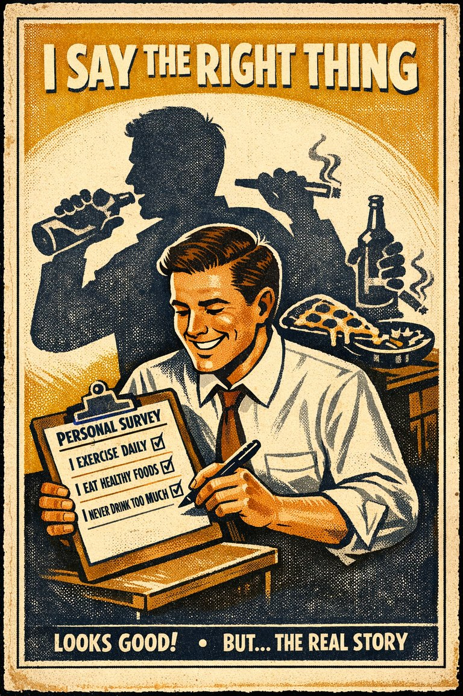
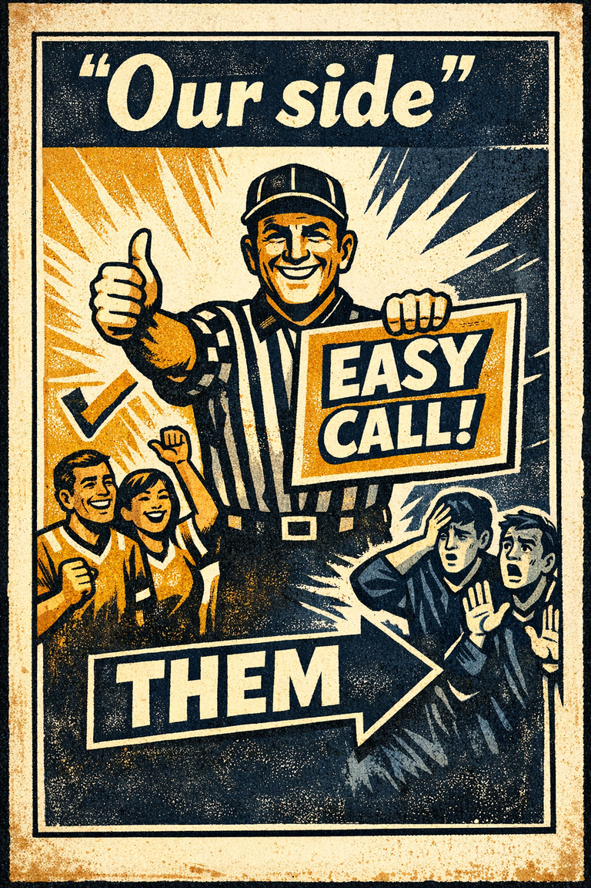

Groupthink
The tendency for groups to protect harmony or momentum at the cost of critical evaluation and dissent.
Hypothesis AssessmentAssociationTeams & managementPolitics & institutions

Cognitive Biases
A practical cognitive-bias site with clear definitions, learning paths, assessments, self-audits, and debiasing tools.
Theory Article
An essay on how social cost changes what gets noticed, said, and challenged long before a formal group decision is written down.
One reason social bias is dangerous is that it does not wait for the vote. It reshapes the cognitive environment while the room is still deciding what counts as a live option and what sounds sayable out loud.
A meeting is not just a place where reasoning gets reported. It is part of the environment in which reasoning happens. Who speaks first, whose status is salient, and what dissent costs all affect what finally looks like the strongest case.
That is why groupthink, authority bias, social desirability bias, and false-consensus effect often appear together rather than separately.
Silence can be evidence of agreement, but it can also be evidence of pressure, fatigue, hierarchy, or anticipated futility. Good teams learn to distinguish those possibilities before treating convergence as truth-tracking.
The later record of the meeting often hides this. The minutes can look calm even when the cognition in the room was socially bent.
A bias site should therefore teach meeting structures, not just labels. Protected objection, silent first-pass notes, and explicit role rotation are not management niceties. They are debiasing devices.
If we only teach the word groupthink and never teach the room design that reduces it, we have taught the easier half of the lesson.
Use these entry pages after the article if you want the same theory translated into more concrete diagnostic and repair tools.
The tendency for groups to protect harmony or momentum at the cost of critical evaluation and dissent.

The tendency to give excess weight to the opinion of a high-status or authoritative source independent of whether the source has earned that weight on the specific issue.

The tendency to over-report socially approved attitudes or behaviors and under-report the ones likely to invite embarrassment, judgment, or sanction.

The tendency to overestimate how many other people share one's own beliefs, preferences, habits, or reactions.

The tendency to favor, trust, defend, or positively interpret people and claims associated with one's own group more readily than comparable outsiders.